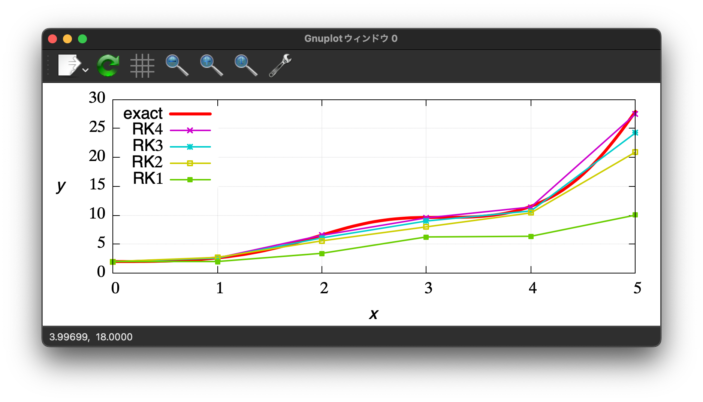

This C++ program demonstrates the application of various Runge-Kutta methods (first to fourth order) for solving a first-order ordinary differential equation (ODE). 
./builds/build_ODE/runge_kutta/main.cpp#L1
求めた流速から，次の時刻の境界面$\Omega(t+\Delta t)$を見積もり，その面上で節点を移動させ歪さを解消する．
修正ベクトルは，$\Delta t$で割り，求めた流速$\nabla \phi$に足し合わせて，節点を時間発展させる．
ノイマン節点も修正流速を加え時間発展させる． ただし，ノイマン節点の修正流速に対しては，節点が水槽の角から離れないように，工夫を施している．
./builds/build_bem/BEM_calculateVelocities.hpp#L348
./builds/build_bem/BEM_setBoundaryConditions.hpp#L7
$\phi$と$\phi_n$に関するBIEは，
$$ \alpha ({\bf{a}})\phi ({\bf{a}}) = \iint_\Gamma {\left( {G({\bf{x}},{\bf{a}})\nabla \phi ({\bf{x}}) - \phi ({\bf{x}})\nabla G({\bf{x}},{\bf{a}})} \right) \cdot {\bf{n}}({\bf{x}})dS} \quad\text{on}\quad{\bf x} \in \Gamma(t). $$
これを線形三角要素とGauss-Legendre積分で離散化すると，
./builds/build_bem/BEM_solveBVP.hpp#L226
このループでは，ある面integ_fに隣接する節点{p0,p1,p2}の列,IGIGn[origin(fixed),p0],...に値が追加されていく．
（p0が多重接点の場合，適切にp0と同じ位置に別の変数が設定されており，別の面の積分の際にq0が参照される．）
p0は，{面,補間添字}で決定することもできる．
{面,補間添字0}->p0,{面,補間添字1}->p1,{面,補間添字2}->p2というように．
{面A,補間添字},{面B,補間添字},{面C,補間添字}が全て同じ節点p0を指していたとする． 普通の節点なら，IGIGn[origin,{p0,nullptr}]を指す． 多重節点なら，IGIGn[origin,{p0,面A}],IGIGn[origin,{p0,面B}]を指すようにする． この操作を言葉で言い換えると， 「nが不連続に変化する点では，その点の隣接面にそれぞれ対してφnを求めるべきである（φは同じでも）．」 「nが不連続に変化する点では，どの面を積分するかに応じて，参照するφnを区別し切り替える必要がある．」
//@ さて，この段階でp0が多重節点であるかどうか判断できるだろうか？
{節点，面}-> 列ベクトルのインデックス を決めれるか？
面を区別するかどうかが先にわからないので，face*のまsまかnullptrとすべきかわからないということ．．．．
PBF_index[{p, Dirichlet, ある要素}] は存在しないだろう．Dirichlet節点は，{p, ある要素}からの寄与を，ある面に
./builds/build_bem/BEM_solveBVP.hpp#L333
ニュートン法で使うヤコビアンなどを別のものに置き換えた方法．
./builds/build_root_finding/example_Broyden.cpp#L1
最適か否かを判断するための関数は１つだけで，最適化したい変数は複数である場合でも， 最適化は，ヘッセ行列を利用したニュートン法によって可能である． この方法で，変数は，関数を根とするのではなく，関数を最大最小（停留点）とする値へと収束する．
./builds/build_root_finding/example_NewtonRaphson.cpp#L1
\Delta t$を設定\nabla^2 {\bf u}$の計算PoissonRHS,$b$と$\nabla^2 p^{n+1}$における$p^{n+1}$の係数の計算{\rho}^\ast$を計算p^{n+1}$を計算p^n$だけを使って近似）p^{n+1}$の計算\nabla {p^{n+1}}$が計算でき， $\frac{D{\bf u}}{D t}=-\frac{1}{\rho}\nabla {p^{n+1}} + \frac{1}{\nu}\nabla^2{\bf u} + {\bf g}$（粘性率が一定の非圧縮性流れの加速度）を得る．\frac{D\bf u}{Dt}$を使って，流速を更新．流速を使って位置を更新./builds/build_sph/SPH.hpp#L211
ISPHを使えば，水面粒子の圧力を簡単にゼロにすることができる．
$\nabla \cdot {\bf u}^\ast$は流ればで満たされれば十分であり，壁面表層粒子の圧力を，壁面表層粒子上で$\nabla \cdot {\bf u}^\ast$となるように決める必要はない．
./builds/build_sph/SPH.hpp#L390
壁粒子の流速を流体粒子の流速に応じて変化させると計算が煩雑になるので，ここでは壁面粒子の流速は常にゼロに設定することにした（ゼロで一定というのは不自然ではない）．
一方，壁粒子の圧力がゼロだとするのは不自然で，流体粒子の圧力$p^{n+1}$の計算に悪影響を及ぼす．
なので．壁粒子の圧力は各ステップ毎に計算し直す必要がある．
壁面粒子の圧力は，壁面法線方向流速をゼロにするように設定されるべきだろう．
./builds/build_sph/SPH_Functions.hpp#L216
\nabla^2 {\bf u}$の計算✅ ラプラシアンの計算方法: $\nabla^2 {\bf u}=\sum_{j} A_{ij}({\bf u}_i - {\bf u}_j),\quad A_{ij} = \frac{2m_j}{\rho_i}\frac{{{\bf x}_{ij}}\cdot\nabla W_{ij}}{{\bf x}_{ij}^2}$
./builds/build_sph/SPH_Functions.hpp#L230
PoissonRHS,$b$と$\nabla^2 p^{n+1}$における$p^{n+1}$の係数の計算次の時刻の流れ場が発散なし$\nabla\cdot{\bf u}^{n+1}=0$であることを保証してくれる圧力を使って，
$\frac{D {\bf u}}{D t} =-\frac{1}{\rho} \nabla p^{n+1}+\nu \nabla^2 {\bf u}^n+{\bf g}$を決定し，時間発展させたい．
そのような圧力を$p^{n+1}$と書くことにする．
そのような圧力の条件は，次のようになる．
$$ \begin{align} &&\frac{D {\bf u}}{D t} &=-\frac{1}{\rho} \nabla p^{n+1}+\nu \nabla^2 {\bf u}^n+{\bf g}\ &\rightarrow& \frac{{\bf u}^{n+1} - {\bf u}^{n}}{\Delta t} &=-\frac{1}{\rho} \nabla p^{n+1}+\nu \nabla^2 {\bf u}^n+{\bf g}\ &\rightarrow& \nabla \cdot\left(\frac{\rho}{\Delta t} {\bf u}^{n+1}\right) + \nabla^2 p^{n+1} &= \nabla \cdot \left(\frac{\rho}{\Delta t} {\bf u}^n+\mu \nabla^2 {\bf u}^n+\rho {\bf g}\right)\ &\rightarrow& \nabla^2 p^{n+1} &= b, \quad b = \nabla \cdot {{\bf b}^n} = \nabla \cdot \left(\frac{\rho}{\Delta t} {\bf u}^n+\mu \nabla^2 {\bf u}+\rho {\bf g}\right) \end{align} $$
この$b$をPoissonRHSとする．（仮流速は${\bf u}^\ast = \frac{\Delta t}{\rho}{\bf b}^n$である．）
✅ 発散の計算方法: $b=\nabla\cdot{\bf b}^n=\sum_{j}\frac{m_j}{\rho_j}({\bf b}_j^n-{\bf b}_i^n)\cdot\nabla W_{ij}$
PoissonRHS,$b$の計算の前に，$\mu \nabla^2{\bf u}$を予め計算しておく．
壁粒子の圧力は時間発展させないので，壁粒子の$p^n$を計算する必要がある．順で計算する．
p^n$だけを使って近似）p^{n+1}$の計算✅ ラプラシアンの計算方法: $\nabla^2 p^{n+1}=\sum_{j}A_{ij}(p_i^{n+1} - p_j^{n+1}),\quad A_{ij} = \frac{2m_j}{\rho_i}\frac{{{\bf x}_{ij}}\cdot\nabla W_{ij}}{{\bf x}_{ij}^2}$
./builds/build_sph/SPH_Functions.hpp#L302
$b = \nabla \cdot {{\bf b}^n} + \alpha \frac{\rho_w - \rho^\ast}{{\Delta t}^2}$として計算を安定化させる場合がある．
$\rho^\ast = \rho + \frac{D\rho^\ast}{Dt}\Delta t$と近似すると，
$$ \rho^\ast = \rho + \frac{D\rho^\ast}{Dt}\Delta t,\quad \frac{D\rho^\ast}{Dt} = - \rho \nabla\cdot{\bf u}^\ast,\quad \nabla\cdot{\bf u}^\ast = \frac{\Delta t}{\rho} \nabla\cdot{\bf b}^n $$
であることから，$(\rho_w - \rho^\ast) / {\Delta t^2}$は，$\nabla\cdot{\bf b}^n$となって同じになる．
しかし，実際には，$\rho^\ast$は，$\nabla \cdot {{\bf b}^n}$を使わずに，つまり発散演算を行わずに評価するので，
計算上のようにはまとめることができない．
$\rho^\ast$を計算する際に，$\rho^\ast = \rho_w + \frac{D\rho^\ast}{Dt}\Delta t$を使った場合，確かに上のようになるが，
実際に粒子を仮位置に移動させその配置から$\rho^\ast$を計算した場合は，数値計算上のようにまとめることはできない．
PoissonRHS,$b$の計算方法と同じである場合に限る．
もし，計算方法が異なれば，計算方法の違いによって，安定化の効果も変わってくるだろう．
./builds/build_sph/SPH_Functions.hpp#L336
\nabla p^{n+1}$の計算 -> ${D {\bf u}}/{Dt}$の計算✅ 勾配の計算方法: $\nabla p_i = \rho_i \sum_{j} m_j (\frac{p_i}{\rho_i^2} + \frac{p_j}{\rho_j^2}) \nabla W_{ij}$
✅ 勾配の計算方法: $\nabla p_i = \sum_{j} \frac{m_j}{\rho_j} p_j \nabla W_{ij}$
./builds/build_sph/SPH_Functions.hpp#L450
3次スプライン関数と5次スプライン関数の実装とテストコード * 関数の形状を確認． * 体積積分が1になるかどうかを確認．
./builds/build_sph/test_KernelFunctions.cpp#L1
Smoothed Particle Hydrodynamics (SPH)では，効率的な近傍粒子探査が必要となる． このコードでは，Bucketを用いた粒子探索のテストを行う．
結果はVTKファイルに出力される．
* 全ての粒子を表示したものはall.vtp
* 中心の粒子を表示したものはcenter*.vtp
* 中心の粒子が探査したセル内にある粒子を表示したものはinCell*.vtp
* セル内かつ球内にある粒子を表示したものはinSphere*.vtp
each_cell*.vtpeach_cell_position*.vtp./builds/build_sph/test_Buckets.cpp#L1
CSRは行列を表現する方法の一つである． このCSRクラスは，std::unordered_mapを用いて，行列の非ゼロ要素を表現する． std::unordered_mapのkeyはポインタであり，valueはdoubleである． CSRクラス自身が，行列の行番号を保存しており，keyであるCSRクラスは行列の列番号を保存している．
./builds/build_system_of_linear_eqs/CSR.cpp#L1
H$V$H$をQR分解した行列$Q$と$R$g$は行列$Q$の最初の列ArnoldiProcessによって，$H$と$V$を求める．このArnoldiProcessクラスの派生クラスとしてGMRESを定義している．
./builds/build_system_of_linear_eqs/GMRES.cpp#L1
ヘッセンベルグ行列$H[0:k-1]$は，Aと相似なベクトルであり，同じ固有値を持つ
GMRESで使う場合，$V0$にはNormalize(b-A.x0)を与える．
x0は初期値
アーノルディ法は固有値問題の数値解法であり反復解法． 一般的な行列の固有ベクトルと固有値をクリロフ空間の直行基底によって近似する方法計算する方法． https://en.wikipedia.org/wiki/Arnoldi_iteration
./include/basic_linear_systems.hpp#L678